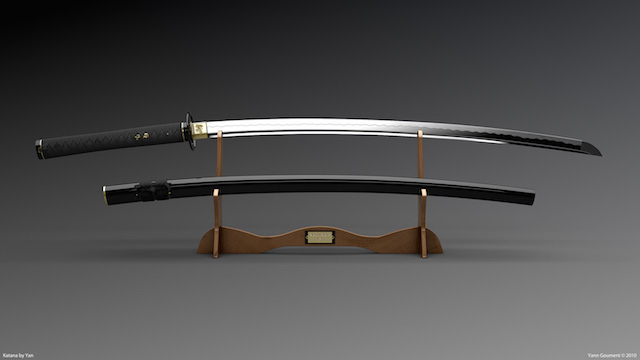

Historically, katana were one of the traditionally made Japanese swords that were used by the samurai of feudal Japan. The katana is characterized by its distinctive appearance: a curved, slender, single-edged blade with a circular or squared guard and long grip to accommodate two hands.
Facts about katana
- The first use of "katana" (gatana) as a word to describe a long sword that was different from a tachi occurs as early as the Kamakura Period (1185–1333)
- The length of the katana blade varied considerably during the course of its history. In the late 14th and early 15th centuries, katana blades tended to have lengths between 70 and 73 cm
- In Japan, from 1945 to 1953, sword manufacture and sword-related martial arts were banned. Many swords were confiscated and destroyed, and swordsmiths were not able to make a living.
- Pronounced [katana], the kun'yomi (Japanese reading) of the kanji, originally meaning dao or knife/saber in Chinese, the word has been adopted as a loanword by the Portuguese language.In Portuguese the designation (spelled catana) means "large knife" or machete.
- Ireland.Under the Firearms and Offensive Weapons Act 1990 (Offensive Weapons) Order 2009, katanas made post-1953 are illegal unless made by hand according to traditional methods.